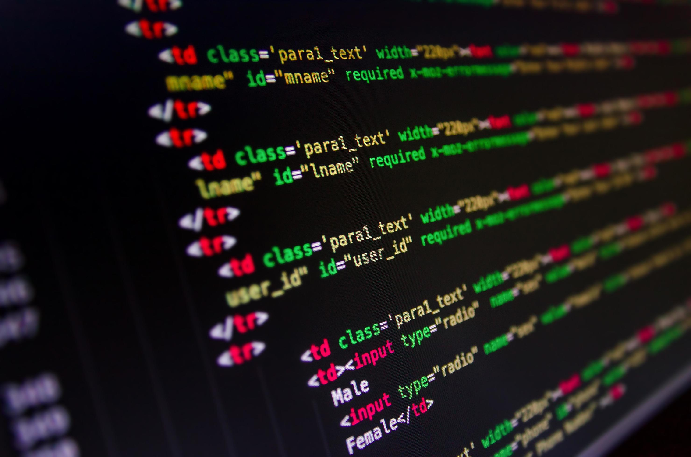
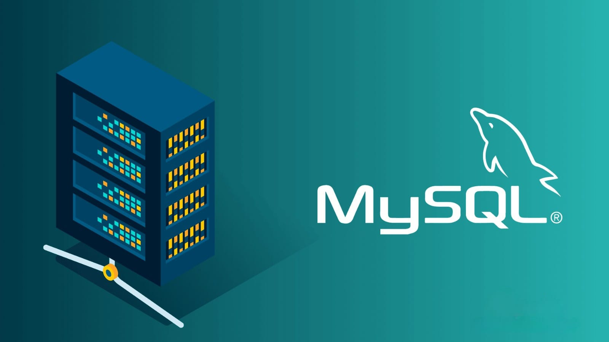
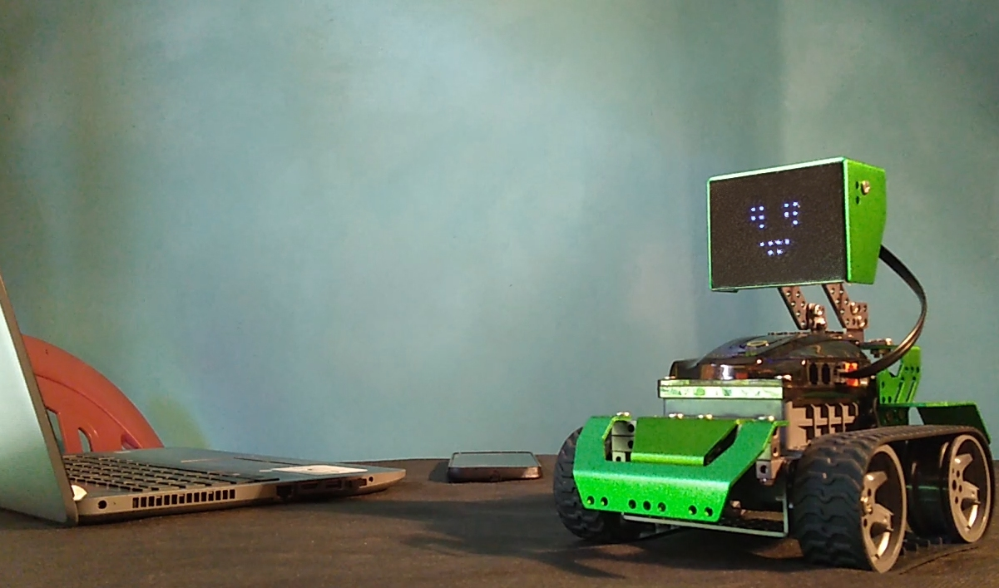

Área de Informática
Formación técnica para el mundo digital
Preparamos a nuestros estudiantes para enfrentar los desafíos tecnológicos actuales, desarrollando habilidades en programación, redes y sistemas.
Conoce más¿Por qué estudiar informática?
La informática impulsa el mañana. En la Escuela Técnica N°1 ofrecemos una formación de vanguardia que transforma el interés en habilidad profesional. A través de la lógica y la práctica constante, aprenderás a idear y construir soluciones de software, configurar infraestructuras de comunicación y liderar proyectos de base tecnológica.
El egresado técnico no solo domina las herramientas digitales de hoy, sino que desarrolla el pensamiento crítico y la capacidad de adaptación necesarios para liderar las innovaciones del futuro, abriendo puertas a un mercado laboral dinámico y con alta demanda de talento especializado.
Aprendizaje basado en proyectos
Nuestros estudiantes aplican los conocimientos adquiridos desarrollando sistemas reales, como aplicaciones web, gestores de stock y soluciones tecnológicas para la institución.
📦 Sistema de Pañol
Gestión de herramientas, préstamos y control de stock en tiempo real.
🌍 Aplicaciones Web
Desarrollo de sitios y sistemas conectados a bases de datos.
⚙️ Automatización
Soluciones para optimizar procesos mediante tecnología.
Desarrollo de Software
En esta área los estudiantes aprenden a programar utilizando lenguajes como Python y JavaScript. Se desarrollan aplicaciones reales, páginas web dinámicas y sistemas conectados a bases de datos.
Se trabaja con lógica, algoritmos y buenas prácticas de desarrollo.

Redes
Se estudia cómo se conectan los dispositivos, configuración de routers, direccionamiento IP y protocolos de red.
Fundamental para entender Internet y la comunicación digital.
Sistemas
Administración de sistemas operativos como Linux, manejo de servidores y despliegue de aplicaciones.
Se aprende a trabajar en entornos reales de infraestructura.


Bases de Datos
Diseño, creación y gestión de bases de datos con SQL.
Permite almacenar, organizar y consultar grandes volúmenes de información.
robotica
Administración de sistemas operativos como Linux, manejo de servidores y despliegue de aplicaciones.
Se aprende a trabajar en entornos reales de infraestructura.


impresión 3D
Diseño, creación de piezas impresas en 3D.
Permite almacenar, organizar y consultar grandes volúmenes de información.
Salida laboral y Futuro Profesional
Los egresados de la especialidad de Informática cuentan con las habilidades y certificaciones técnicas necesarias para integrarse de forma inmediata en el sector tecnológico o emprender iniciativas digitales propias.
Desarrollo de Software
Programación de aplicaciones web, móviles y de escritorio utilizando lenguajes y frameworks modernos.
Soporte e Infraestructura
Configuración, mantenimiento y seguridad de redes informáticas, servidores y sistemas operativos.
Bases de Datos
Administración y estructuración de datos en sistemas SQL, garantizando el acceso rápido y seguro a la información.
Estudios Superiores
Base excelente para cursar Ingeniería en Sistemas, Licenciatura en Informática o tecnicaturas avanzadas.